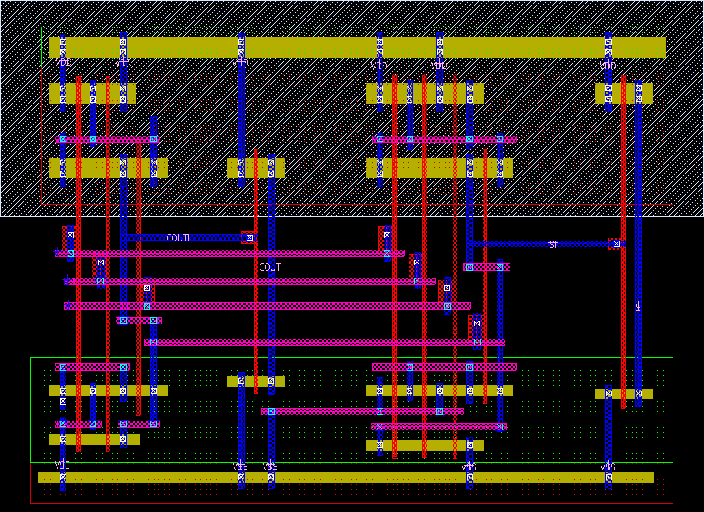
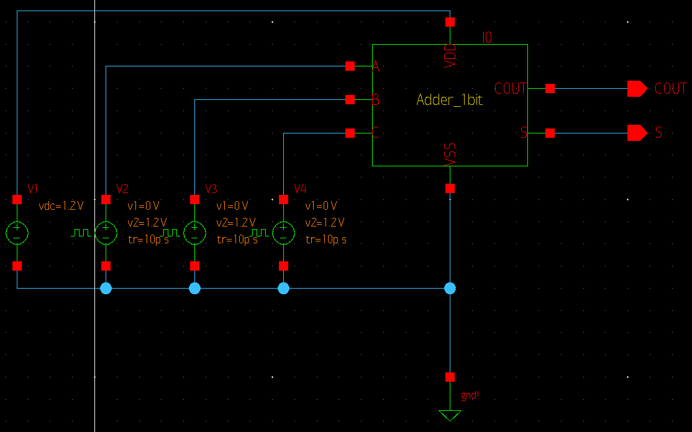
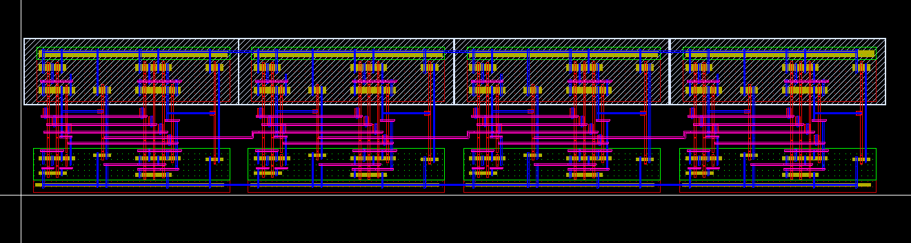
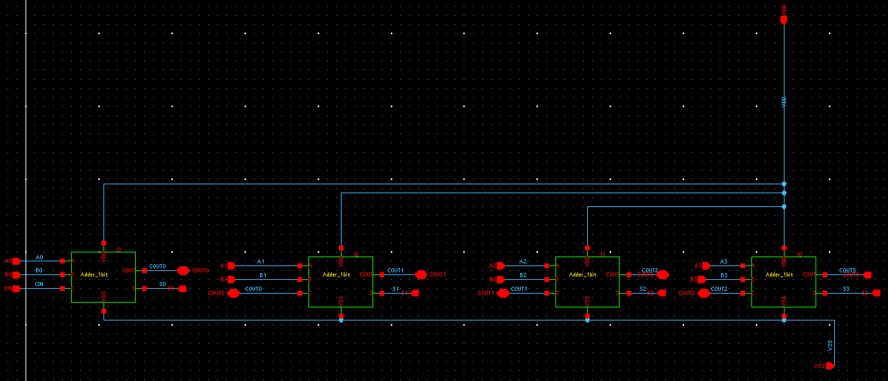
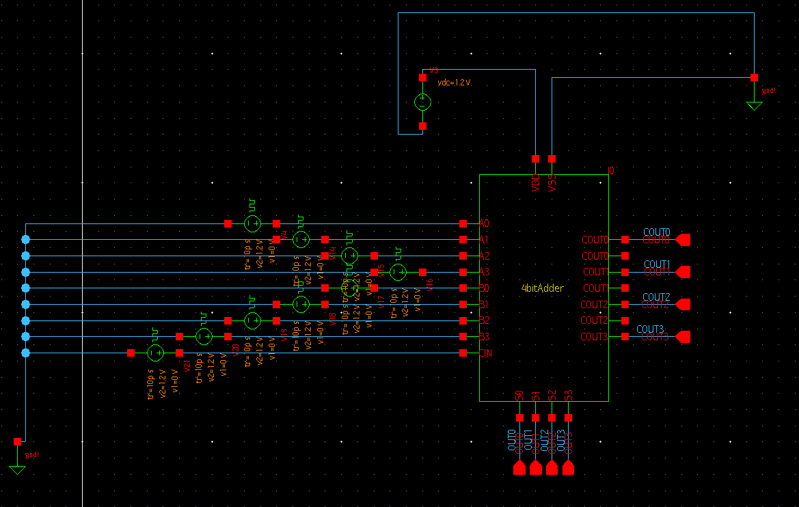
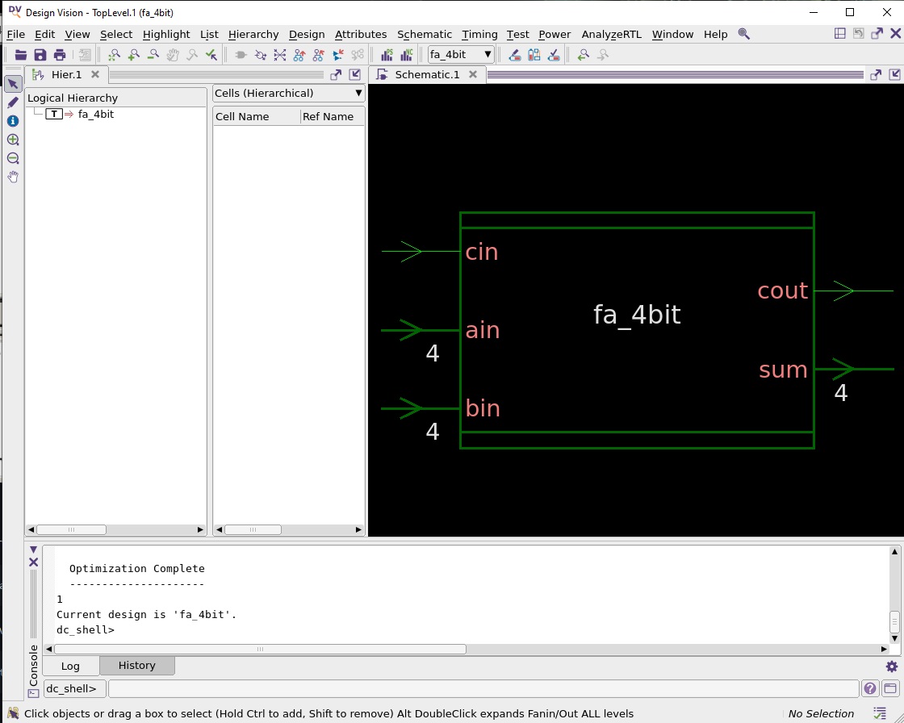
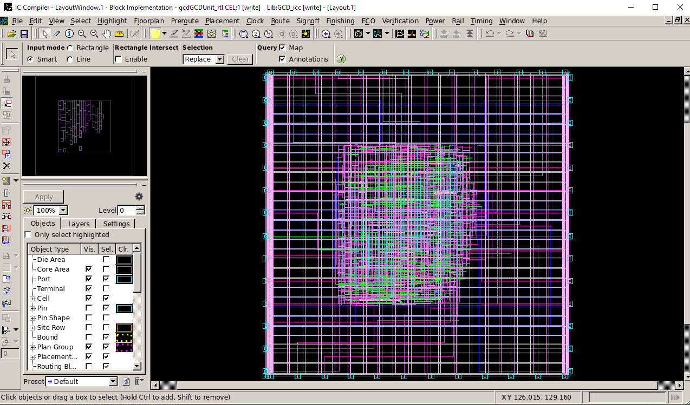

The 4-bit Adder
Project Objective
In this project, I aimed to create a 4-bit adder in Synopsis at an 180nm architecture. Through the use of the following methods: Layout Schematics and Synthetization
Starting with the 1-bit Adder
 For the 1-bit adder, I started off with the CMOS schematics, of which the layout image above is based on. The hardest part of this part of the project was debugging the layout schematic, given that I wasnt exactly familiar with all of the rules regarding the spacing and sizing of the wells and vias
After finishing the LVS and DRC tests, we end up with the symbol image above, which can be inserted into other schematics as a whole 1-bit adder.
Creating the 4-bit Adder
  This here 4bit adder is a combination of 4 interconnected 1bit adders, which allows for up to 4 bits, or a single HEX to be added to another.
The process of interconnecting the adders was rather simple, all you must do is connect the OUTPUT lane from one adder to the other, with the exception of the first and last one. From there its just a matter of having the inputs set up correctly.
The 4-bit Adder Compilation/Synthetization
 The point of this part is to finalize the previous parts of the process by creating a schematic of our 4-bit adder as an IC, which could be printed by a machine.
Project File